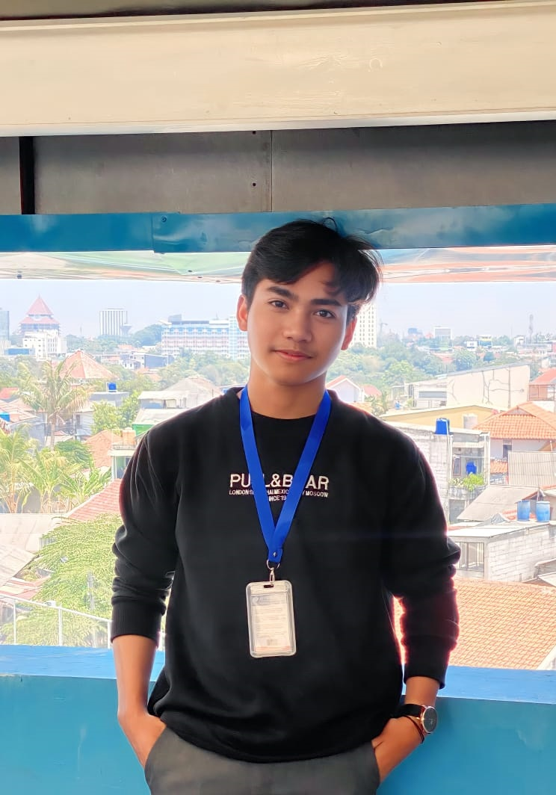

⌁
Monitoring · InfrastrukturReal-time Server Monitoring
Implementasi pemantauan server untuk studi kasus SMP Islam Al-Azhar 4 Kemandoran menggunakan Prometheus dan Grafana via Tailscale.

Halo, saya Faqih Al Fauzan — lulusan S1 Teknik Informatika yang berfokus pada pengembangan aplikasi web, infrastruktur IT, pemantauan server, dan solusi digital bisnis.
faqih@portfolio:~$ whoami
Faqih Al Fauzan
focus = [
"Web Development",
"Server Monitoring",
"IT Infrastructure",
"Digital Business"
]
status: open_to_opportunities ▌
Cuplikan proyek teknis utama yang pernah saya kerjakan.
Implementasi pemantauan server untuk studi kasus SMP Islam Al-Azhar 4 Kemandoran menggunakan Prometheus dan Grafana via Tailscale.
Aplikasi web interaktif untuk membantu alur kerja konveksi, pencatatan order, kebutuhan bahan, hingga pelacakan status produksi.
Beberapa sertifikasi profesional dan kualifikasi yang diselesaikan.
 ↗ Lihat sertifikat
↗ Lihat sertifikat
BNSP
 ↗ Lihat sertifikat
↗ Lihat sertifikat
BNSP / Pelatihan Digital
_page-0001.jpg) ↗ Lihat sertifikat
↗ Lihat sertifikat
Google / Coursera
Teknologi dan perangkat kerja yang pernah digunakan dalam proyek, praktik, atau operasional.
Saya tertarik menghubungkan pengembangan software dengan kebutuhan operasional sehari-hari.
Saya Faqih Al Fauzan, lulusan S1 Teknik Informatika dari Sekolah Tinggi Teknologi Terpadu Nurul Fikri. Saya memiliki pengalaman praktik melalui proyek pengembangan aplikasi, pemantauan server, dan pipeline deployment.
Saya juga membantu digitalisasi usaha konveksi keluarga, sehingga terbiasa memahami kebutuhan teknis dari sudut pandang bisnis dan operasional.
Terbuka untuk posisi IT Developer, IT Staff, IT Support, maupun proyek freelance.
Saya terbuka untuk peluang kerja full-time, proyek freelance, dan diskusi solusi digital.